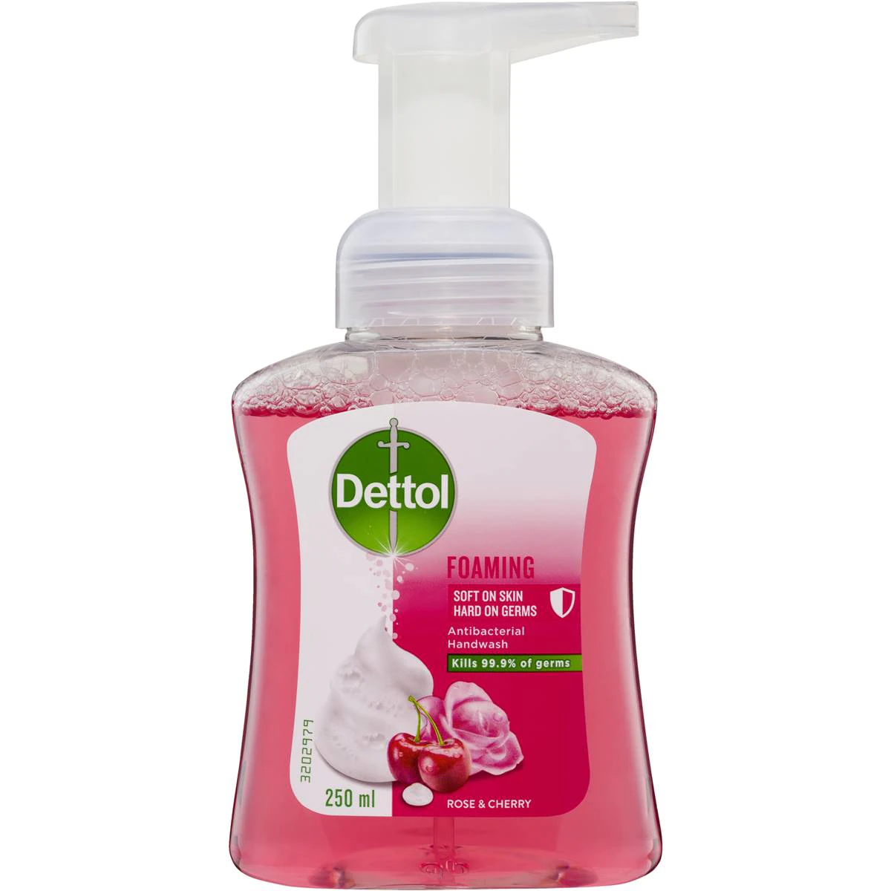
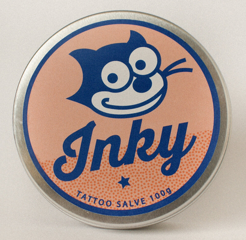
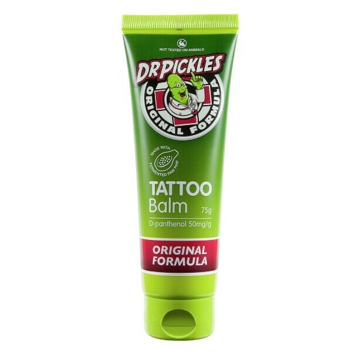

AFTERCARE
Below I will cover two effective ways to heal your fresh tattoo:
- If I applied second skin to your tattoo in the studio, please read the section titled "HEALING WITH SECOND SKIN".
- If I applied cream and used cling wrap to protect your tattoo please read the section titled "HEALING WITH CREAM".
HEALING WITH SECOND SKIN
- Over the next 24 hours, your second skin is likely to fill up with some reddish/brownish fluid, this is totally normal so don't stress! It's just a build up of blood & plasma, which your body naturally excretes in order to heal wounds. However IF that fluid leaks out anywhere, you will need to remove the second skin ASAP, as it is no longer sterile (see instructions below for how to remove second skin), once removed follow the instructions below for "HEALING WITH CREAM", minus the part about removing the cling wrap.
- If the second skin doesn't leak or cause an allergic reaction (look for a red, itchy rash around the outside of the second skin) it is safe to keep it on for 5-6 days in total. If it begins to irritate you, you can take it off sooner but I recommend leaving it on for the full 6 days as this will give you the best end result as it diminishes the risk of infection & fallout.
- Your tattoo will likely get quite itchy around the 3-4 day mark, this is normal so long as no rash is present and it's a sign your tattoo is healing. Feel free to give it a good slap a few times to relieve the itchiness.
- Once you're ready to remove the second skin , it is best to do so at the end of a hot shower, as this will help to loosen the adhesive. Start by peeling away a corner and use this to slowly peel it off. If it gets stuck, you can use some soapy water to help. You might notice a perfect imprint of your tattoo on the second skin as you remove it, DO NOT worry, your tattoo isn't coming off, it's just dried onto the second skin.
- Once you've removed it, give it a good wash a few times with soap (I recommend something like the dettol foam handwash). Once it's clean you can hop out of the shower, pat it dry with paper towel and apply a thin layer of your preferred aftercare cream (please find section below for recommended products).
- Over the next few days after removing the second skin, your tattoo will begin to lightly peel away the dead skin, this is totally normal, just let it flake away naturally, don't pick at it or rub it to remove the skin faster.
- During the peeling stage you will need to keep your tattoo clean & moisturized by applying a thin layer of aftercare cream, twice a day.
- Once the peeling has finished, please note that your tattoo will have a milky appearance for a couple of weeks as your skin continues to turn over (think of how your skin goes white once a scab has come off).
- After a month of having your tattoo, you will be able to see if it needs a touch up. If you suspect that it does, please don't hesitate to contact me to book in for a free touch up.
- Additionally, if the first piece of second skin comes off early and you'd like to continue healing with second skin you can either drop back into the studio the next day so that I can apply a second piece, or you can pick up a roll of it from Chemist Warehouse - click here - and apply it yourself at home. Just please make sure the area is clean & dry before applying and follow the instructions included.
HEALING WITH CREAM
- Before you left the studio, I applied an aftercare cream to your tattoo and wrapped it in cling wrap to keep it safe for the travel home. Please remove the cling wrap cover within 2 hours to minimize the risk of infection.
-
Before you remove the cling wrap, you want to make sure you have the following available to you:
- Clean scissors
- Soap (preferably dettol foam handwash)
- Paper towel
- Aftercare cream of choice
- Once you're prepared to remove the cling wrap, make sure to thoroughly wash your hands beforehand to avoid potential infection.
- Start by cutting off the cling wrap, please try to avoid touching the scissors to your fresh tattoo because ouch and it could also cause an infection.
- Once you've removed the cling wrap, it's best to hop in the shower to give the tattoo a thorough wash with warm soapy water (note: it might sting a little bit, sorry!) Make sure to wash it until it no longer feels slimey.
- Once you've finished giving it a thorough clean, hop out of the shower and pat the tattoo dry with paper towel only, as a towel could cause infection.
- Once the tattoo is completely dry, with clean hands you want to apply a thin layer of aftercare cream (please find section below for recommended products). You just want enough cream to create a thin barrier over the tattoo to help prevent an infection if something comes into contact with your fresh tattoo.. you don't want to smother it with cream as your tattoo still needs oxygen to heal and excess moisture = bacteria.
- For the next 2 weeks you will need to wash your tattoo at least twice a day, ideally morning & night and follow up with applying a thin layer of aftercare cream, until your tattoo is fully healed.
- Make sure you have clean hands every time you wash or touch your tattoo, this will minimize risk of infection. If you think something potentially infectious has touched your tattoo, be sure to wash it ASAP.
- Keep pets away from your fresh tattoo as their hair/fur is full of bacteria.
- Keep your fresh tattoo out of the sun, your healing tattoo is extremely sensitive and delicate during the healing process, so treat it well.
- Avoid wearing clothes that are going to excessively rub on it as this will cause irritation and may cause scabs to come off prematurely.
- Do not submerge your tattoo in water for 2 weeks (no bathing, no swimming, no spas etc, showers are fine)
- As your tattoo heals, it will begin to scab up (this is normal, even if it looks a little gnarly) but please do not pick at the scabs, just keep taking care of it as I've instructed and they will all come off in time. Picking scabs off before they're ready to come off will likely lead to infection as well as something we call fall out (this is where the tattoo ink hasn't had time to settle into the skin and so it comes out with the scab, requiring a touch up to restore).
- Your tattoo may feel tight and itchy as it's healing. You can relieve the tightness by applying a thin layer of aftercare cream to your tattoo, which will help restore some moisture to the skin, relaxing the scabs. Please don't scratch at your tattoo if it becomes itchy, you can however give it a good slap to relieve the itchiness.
- Optional: If you would like to, you may wrap your tattoo in cling wrap for the first 2 nights to protect it while you sleep but please make sure your tattoo is clean and has no cream on it before wrapping it in cling wrap. Be prepared for it to be slimey and gross in the morning when you take it off and be sure to give it a good clean in the shower after.
PRODUCT RECOMMENDATIONS
Below are some products I highly recommend using throughout your healing process, all of which are Vegan friendly.
I recommend picking up this Dettol Foam Handwash from your local supermarket as that way you know it's clean every time you use it, unlike a bar of soap which is very drying and often harbors bad bacteria
I use Inky Tattoo Salve throughout the entire tattoo process. I highly recommend this product to be used as your primary tattoo aftercare and have $10 tins available to purchase at the studio.
If you didn't purchase a tin of Inky Tattoo Salve, I would recommend picking up a tube of Dr Pickles Tattoo Balm from your local Woolworths and using this as your primary aftercare cream, until your tattoo has finished healing.
Once your tattoo has finished healing, I recommend using a good daily moisturizer, to keep your tattoo looking good well into the future. This is just an example, but whatever is suited to your needs will work fine.

If you have a leak in your second skin and need to replace it, I recommend picking up a roll of this from Chemist Warehouse and getting someone to help you apply it. Make sure your tattoo is clean and dry and whoever reapplies the second skin has clean and dry hands.

Don't forget to use a good SPF when you're having fun in the sun! Your tattoo lives under the surface of your skin, so the healthier your skin is, the better your tattoo looks.
If you've made it to here, well done for taking your tattoo aftercare seriously! If you have any questions or concerns throughout the process, don't hesitate to send me a message. If you suspect you have an infection, you can always drop into the studio and get it checked out or send me a photo so I can assess it. Happy healing & I hope to see you again!